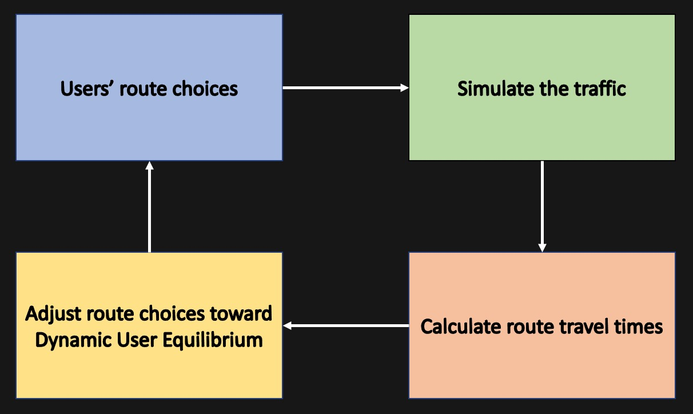
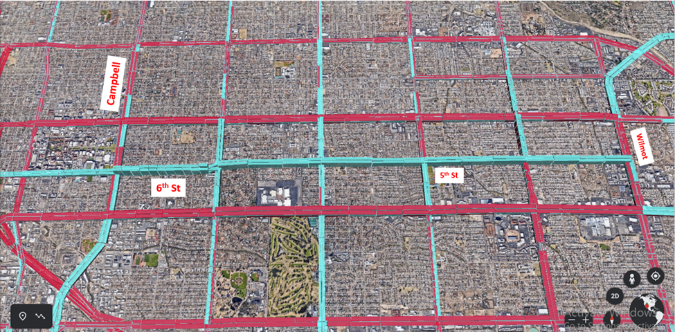

Regional Traffic Simulation Model
A Dynamic Traffic Assignment (DTA) model mimics the mutual dependencies between travelers' route choices and route travel times (low-travel-time routes attract more travelers, hence increasing travel time). By iteratively following the steps in the following framework, DTA can establish a Dynamic User Equilibrium (DUE) status which represents the travelers route choices and the resulting traffics in the most realistic way.
I have established and been maintaining the regional DTA model for Pima County on DynuStudio data management platform, involved with tasks of model creation, model validation, and model calibrations.

This regional model was delivered to Pima County Department of Transportation and since then has been used as traffic analysis tool to evaluate the impact of transportation programs and the impact of changes in transportation facilities.

The figure above illustrates the volumes changes by a future road diet program (also called a lane reduction, is a technique whereby the number of lanes and/or effective width of the road is reduced) on 5th/6th between Campbell Ave and Wilmot St. Blue represents the decreased volumes amount while red represents the increased volumes amount. And we observed that travelers re-direct to other corridors after implementing this road diet program.